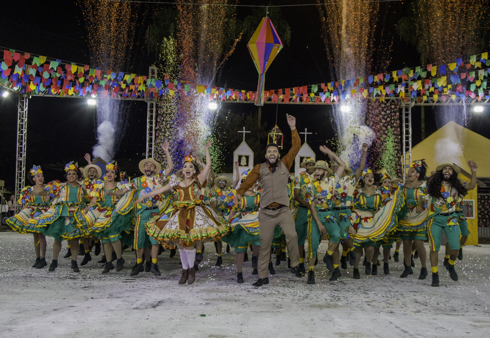

Paixão Cangaço
A Quadrilha Paixão Cangaço é de Águas Lindas de Goiás/GO e completa 18 anos de história em 2026.
SOBRE A QUADRILHA
A Quadrilha Paixão Cangaço é de Águas Lindas de Goiás/GO e completa 18 anos de história em 2026. Fundada em 08 de agosto de 2008, a Quadrilha Junina Paixão Cangaço nasceu da iniciativa de amigos com o propósito de transformar vidas por meio da cultura. Desde sua criação, o grupo atua no resgate de jovens em situação de vulnerabilidade social, promovendo acesso à arte, ao convívio comunitário e ao sentimento de pertencimento. Ao longo de sua trajetória, consolidou-se como um importante agente cultural do município, representando a cidade em festivais regionais, distritais e nacionais. Em 2026, a Paixão Cangaço celebra 18 anos de história, marcados por resistência cultural, evolução artística e importantes conquistas, reafirmando seu compromisso com a valorização da cultura junina e nordestina.
Tema 2024: "Entre encontros e Partidas".
Movido pelo sonho de prosperar, o sertanejo Juscelino deixa sua terra natal em busca de uma nova vida, levando consigo memórias, esperanças e um amor deixado para trás. Na cidade, novas histórias se cruzam com a chegada da família de Filomena, vinda do Sertão para cumprir a tradição do casamento na noite de São João. Entre reencontros, festas e lembranças, o povo celebra suas origens, mantendo viva a cultura nordestina. Ao fim da celebração, partidas e retornos se fazem necessários, restando na memória a força da tradição, das histórias vividas e da identidade do Sertão.
Histórico no Circuito
Essa quadrilha ainda não tem histórico cadastrado no circuito.